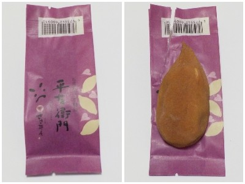

島根県大田市大田町大田イ403-5
更新日 : 2026/10/17

石見銀山の関連でよくある芋代官のお土産っぽい商品です。パッケージが読みづらいですね。
シズクの形が特徴的なんですが、その当時のさつま芋はこんな形だったのかな？
以前に道の駅ごいせ仁摩のイベントでアンケートを書いたらいただけました。ありがとうございます。
近頃流行のねっとり系のサツマイモ感があるお菓子でした。
お菓子なので甘くてねっとりした方が美味しくていいですね。
【おいしいものを食べよう。】【たくさん寝よう。】
【ソロ活をしよう!】【季節感のあることをしよう。】【動画視聴はほどほどに。】【当サイトの全てのコンテンツは無断転載禁止です。】